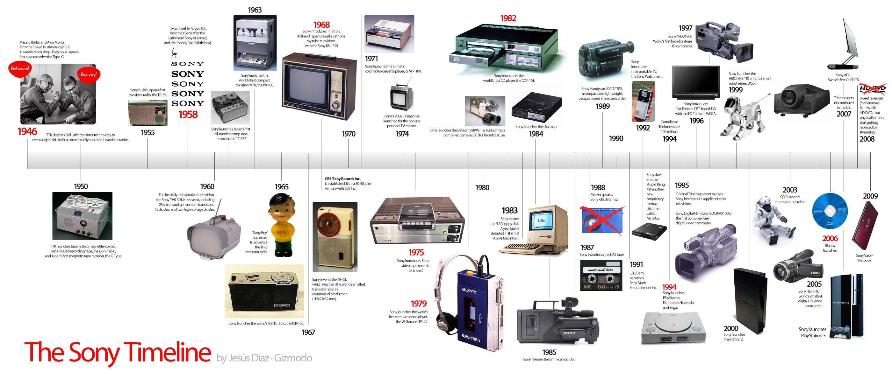

Tijdlijn van Sony
In de jaren '60 begon Sony met een opmerkelijke bijdrage aan de televisiewereld door 's werelds eerste transistor-tv te introduceren. Deze baanbrekende stap betekende een verschuiving van traditionele beeldbuizen naar compactere, efficiëntere technologie. De Trinitron-beeldbuis, geïntroduceerd in 1968, was een revolutie op het gebied van kleurenweergave en vond zijn weg naar huiskamers over de hele wereld. In de jaren '80 en '90 lanceerde Sony ook een reeks flatscreen-tv's, die de manier waarop we naar televisie keken veranderden. Deze modellen waren niet alleen slanker en esthetisch aantrekkelijker, maar introduceerden ook geavanceerdere beeldkwaliteit. Tegelijkertijd zorgde de introductie van de Sony Discman in 1982 voor een revolutie in draagbare audio. De compacte cd-speler stelde mensen in staat om overal van hun favoriete muziek te genieten en legde de basis voor draagbare audio-apparaten die in de daaropvolgende decennia zouden volgen.
In de wereld van digitale beeldvastlegging drukte Sony in de jaren '80 zijn stempel met de introductie van de Sony Mavica, 's werelds eerste compacte autofocuscamera. Deze innovatie veranderde de manier waarop mensen foto's maakten en legde de basis voor de toekomstige ontwikkeling van digitale camera's. In de daaropvolgende decennia bleef Sony een toonaangevende speler op het gebied van fotografie, met de populaire Cyber-shot-serie die compacte en krachtige digitale camera's bood, evenals de professionele Alpha-lijn voor serieuze fotografen. Een ander cruciaal hoofdstuk in de tijdlijn van Sony is de introductie van de PlayStation-gamingconsoles. De lancering van de eerste PlayStation in 1994 markeerde het begin van een nieuw tijdperk in gaming. De PlayStation 2, uitgebracht in 2000, werd de best verkochte console aller tijden en bevestigde Sony's positie in de game-industrie. Latere versies, zoals de PlayStation 3, 4 en 5, bleven de lat hoger leggen met geavanceerde grafische mogelijkheden, online gamingfunctionaliteiten en een uitgebreide bibliotheek van exclusieve titels. De PlayStation-reeks is niet alleen een gamingplatform maar ook een cultureel fenomeen geworden, dat generaties gamers over de hele wereld heeft samengebracht.